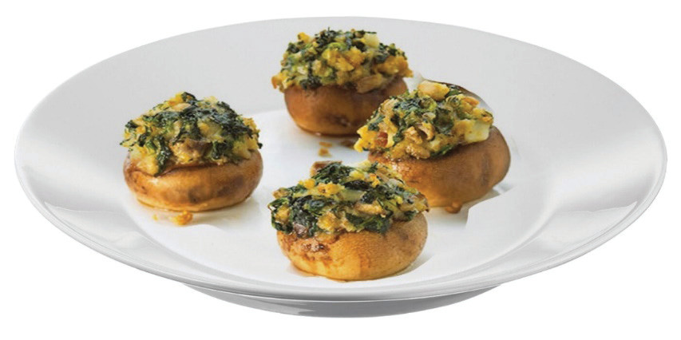

Spinach stuffed mushroom
Ingredients (serve 4 person)
4 large mushrooms
2 eggs
5g grounded garlic
1 bunch spinach
200g cheese
200g breadcrumbs
Grounded pepper (optional)
Pinch of salt
Method
- 1. Preheat the oven to 150°C.
- 2. Put the mushrooms on the baking sheet in an arranged order.
- 3. Bake the mushroom until tender for about 12 minutes.
- 4. Drain any juice accumulated from the mushroom.
- 5. Beat eggs. Add garlic, salt and pepper and then mix them well.
- 6. Chop spinach thinly.
- 7. Mix spinach, 100g cheese and 100g breadcrumbs into the egg mixture then stir them well.
- 8. Divide the spinach mixture over the mushroom caps.
- 9. Sprinkle the mushroom with the remaining cheese and breadcrumbs.
- 10. Return the mushroom to the oven and bake for about 10 minutes until the topping is golden brown, and the cheese is melted.
- 11. Serve it accordingly.
Figure 5.15 shows spinach-stuffed mushrooms.

115